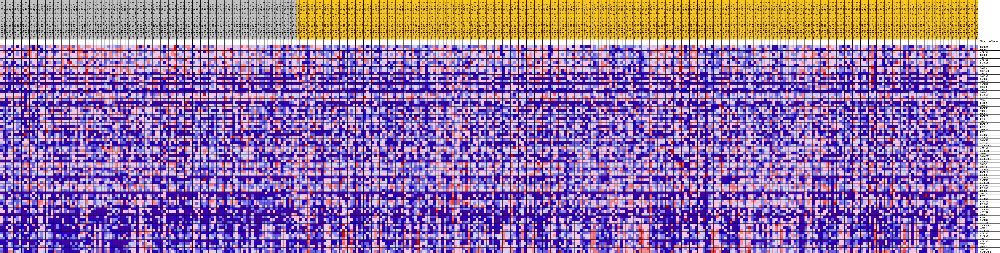
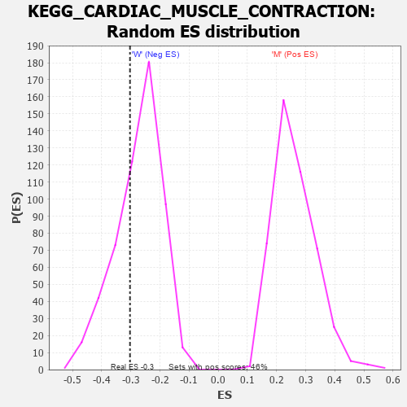

Profile of the Running ES Score & Positions of GeneSet Members on the Rank Ordered List
| Dataset | MUC16.MUC16.cls#M_versus_W.MUC16.cls#M_versus_W_repos |
| Phenotype | MUC16.cls#M_versus_W_repos |
| Upregulated in class | W |
| GeneSet | KEGG_CARDIAC_MUSCLE_CONTRACTION |
| Enrichment Score (ES) | -0.3029853 |
| Normalized Enrichment Score (NES) | -1.1008891 |
| Nominal p-value | 0.3376147 |
| FDR q-value | 1.0 |
| FWER p-Value | 0.994 |
| PROBE | DESCRIPTION (from dataset) | GENE SYMBOL | GENE_TITLE | RANK IN GENE LIST | RANK METRIC SCORE | RUNNING ES | CORE ENRICHMENT | |
|---|---|---|---|---|---|---|---|---|
| 1 | UQCRC1 | na | 549 | 0.176 | 0.0156 | No | ||
| 2 | UQCRC2 | na | 925 | 0.154 | 0.0311 | No | ||
| 3 | ATP1B1 | na | 1253 | 0.140 | 0.0455 | No | ||
| 4 | UQCRH | na | 1306 | 0.138 | 0.0646 | No | ||
| 5 | TPM3 | na | 1954 | 0.118 | 0.0699 | No | ||
| 6 | ATP1B3 | na | 2142 | 0.113 | 0.0829 | No | ||
| 7 | SLC9A1 | na | 2650 | 0.103 | 0.0886 | No | ||
| 8 | CYC1 | na | 2768 | 0.101 | 0.1011 | No | ||
| 9 | COX5A | na | 2773 | 0.100 | 0.1156 | No | ||
| 10 | COX7A2L | na | 3356 | 0.091 | 0.1183 | No | ||
| 11 | TNNI3 | na | 3515 | 0.089 | 0.1283 | No | ||
| 12 | COX7A2 | na | 3525 | 0.089 | 0.1410 | No | ||
| 13 | CACNG5 | na | 3791 | 0.085 | 0.1484 | No | ||
| 14 | COX4I1 | na | 4104 | 0.081 | 0.1545 | No | ||
| 15 | CACNG3 | na | 4329 | 0.077 | 0.1617 | No | ||
| 16 | COX5B | na | 4711 | 0.073 | 0.1653 | No | ||
| 17 | TNNT2 | na | 4874 | 0.071 | 0.1726 | No | ||
| 18 | COX8C | na | 5161 | 0.067 | 0.1772 | No | ||
| 19 | SLC9A6 | na | 5895 | 0.060 | 0.1726 | No | ||
| 20 | ATP2A2 | na | 6053 | 0.058 | 0.1782 | No | ||
| 21 | TPM4 | na | 6283 | 0.056 | 0.1822 | No | ||
| 22 | FXYD2 | na | 7892 | 0.042 | 0.1591 | No | ||
| 23 | COX6B2 | na | 8199 | 0.039 | 0.1593 | No | ||
| 24 | UQCRHL | na | 8884 | 0.034 | 0.1518 | No | ||
| 25 | TNNC1 | na | 9386 | 0.030 | 0.1470 | No | ||
| 26 | UQCRB | na | 9933 | 0.025 | 0.1408 | No | ||
| 27 | UQCRFS1 | na | 10896 | 0.018 | 0.1261 | No | ||
| 28 | MYL3 | na | 11515 | 0.014 | 0.1169 | No | ||
| 29 | COX8A | na | 11758 | 0.013 | 0.1144 | No | ||
| 30 | UQCR10 | na | 12102 | 0.010 | 0.1096 | No | ||
| 31 | RYR2 | na | 12678 | 0.007 | 0.1002 | No | ||
| 32 | COX6A1 | na | 12751 | 0.006 | 0.0998 | No | ||
| 33 | MYL2 | na | 12928 | 0.005 | 0.0973 | No | ||
| 34 | CACNG2 | na | 13435 | 0.002 | 0.0884 | No | ||
| 35 | CACNB1 | na | 13616 | 0.001 | 0.0852 | No | ||
| 36 | COX6B1 | na | 16326 | -0.007 | 0.0371 | No | ||
| 37 | ATP1A3 | na | 16970 | -0.010 | 0.0269 | No | ||
| 38 | CACNA2D2 | na | 19116 | -0.021 | -0.0089 | No | ||
| 39 | ATP1A1 | na | 19222 | -0.022 | -0.0077 | No | ||
| 40 | CACNA1D | na | 19330 | -0.022 | -0.0064 | No | ||
| 41 | COX6C | na | 19789 | -0.024 | -0.0112 | No | ||
| 42 | COX6CP3 | na | 21147 | -0.030 | -0.0314 | No | ||
| 43 | CACNA2D4 | na | 21832 | -0.033 | -0.0389 | No | ||
| 44 | CACNG4 | na | 22112 | -0.034 | -0.0390 | No | ||
| 45 | COX7C | na | 22143 | -0.035 | -0.0345 | No | ||
| 46 | COX7B | na | 23083 | -0.039 | -0.0459 | No | ||
| 47 | CACNG8 | na | 27031 | -0.054 | -0.1096 | No | ||
| 48 | UQCR11 | na | 27223 | -0.055 | -0.1052 | No | ||
| 49 | CACNB3 | na | 28554 | -0.059 | -0.1207 | No | ||
| 50 | CACNG6 | na | 28812 | -0.060 | -0.1167 | No | ||
| 51 | CACNB2 | na | 29448 | -0.062 | -0.1191 | No | ||
| 52 | CACNA1F | na | 31466 | -0.068 | -0.1457 | No | ||
| 53 | MT-CO1 | na | 34865 | -0.079 | -0.1958 | No | ||
| 54 | MT-CO2 | na | 35241 | -0.080 | -0.1909 | No | ||
| 55 | UQCRQ | na | 36867 | -0.085 | -0.2080 | No | ||
| 56 | COX7B2 | na | 37508 | -0.087 | -0.2069 | No | ||
| 57 | MYH7 | na | 38929 | -0.092 | -0.2193 | No | ||
| 58 | CACNG1 | na | 41234 | -0.100 | -0.2465 | No | ||
| 59 | MT-CYB | na | 41970 | -0.102 | -0.2450 | No | ||
| 60 | MT-CO3 | na | 42774 | -0.105 | -0.2443 | No | ||
| 61 | CACNB4 | na | 43002 | -0.106 | -0.2330 | No | ||
| 62 | CACNA1S | na | 46425 | -0.120 | -0.2776 | No | ||
| 63 | ATP1B4 | na | 47079 | -0.123 | -0.2717 | No | ||
| 64 | COX6A2 | na | 47426 | -0.125 | -0.2598 | No | ||
| 65 | MYH6 | na | 49039 | -0.133 | -0.2697 | No | ||
| 66 | CACNG7 | na | 50876 | -0.146 | -0.2818 | Yes | ||
| 67 | ATP1A4 | na | 51021 | -0.147 | -0.2630 | Yes | ||
| 68 | CACNA2D1 | na | 51233 | -0.149 | -0.2451 | Yes | ||
| 69 | ACTC1 | na | 53389 | -0.177 | -0.2585 | Yes | ||
| 70 | CACNA1C | na | 53758 | -0.186 | -0.2382 | Yes | ||
| 71 | ATP1B2 | na | 54440 | -0.205 | -0.2207 | Yes | ||
| 72 | SLC8A1 | na | 54748 | -0.221 | -0.1943 | Yes | ||
| 73 | TPM1 | na | 54765 | -0.222 | -0.1624 | Yes | ||
| 74 | ATP1A2 | na | 54834 | -0.225 | -0.1309 | Yes | ||
| 75 | TPM2 | na | 54924 | -0.231 | -0.0991 | Yes | ||
| 76 | COX4I2 | na | 54974 | -0.235 | -0.0659 | Yes | ||
| 77 | COX7A1 | na | 55056 | -0.243 | -0.0322 | Yes | ||
| 78 | CACNA2D3 | na | 55108 | -0.248 | 0.0029 | Yes |

